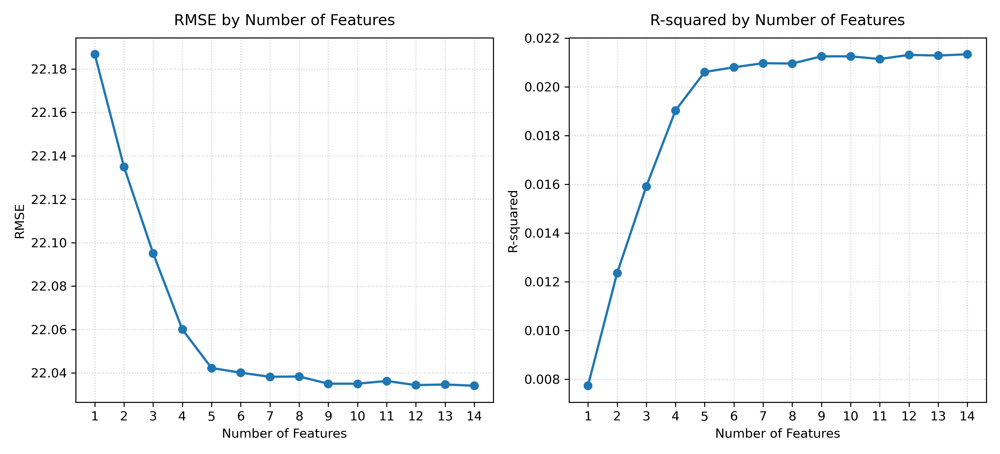
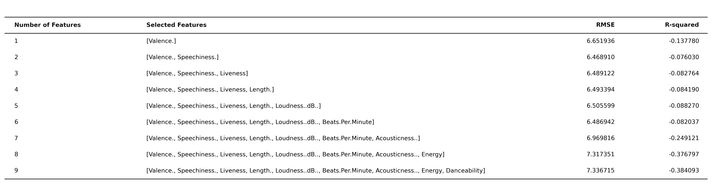
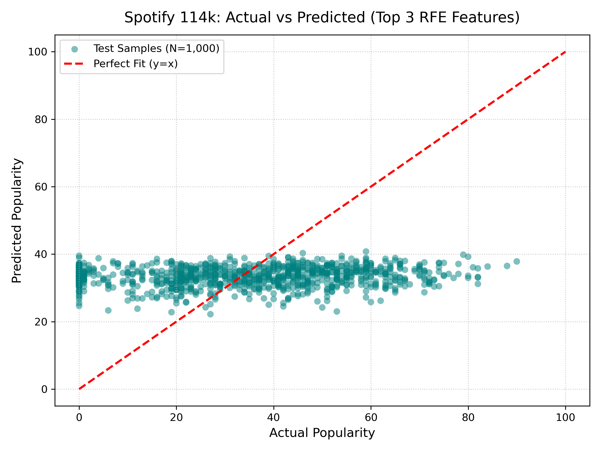

本專案採用 Hugging Face 開源之 Spotify Tracks Dataset (114,000 筆資料、114 種曲風)，完整實作 ANOVA F-test (Filter)、RFE (Wrapper) 與 Lasso (Embedded) 三大特徵篩選技術，探索在百萬串流時代中，主導歌曲熱門度的決定性聲學特徵。
觀察測試集（Test Set 20% = 22,800 筆）隨特徵數量從 1 到 14 逐步加入時的 RMSE 與 R² 變化趨勢

原生 Matplotlib 產出成果：features_performance.png (300 DPI)

原生 Matplotlib 表格成果：features_table.png (300 DPI)
| 特徵數 (k) | 選取特徵組合 (依 RFE 排名由先至後) | 測試集 RMSE | 測試集 R² | 模型狀態 / 說明 |
|---|---|---|---|---|
| 1 | [instrumentalness] (純音樂演奏度) |
22.186717 | 0.007739 | 單一最大影響因子 |
| 2 | [... + valence] (音樂正向度) |
22.134976 | 0.012361 | 誤差顯著下降 |
| 3 | [... + danceability] (適合跳舞度) |
22.095078 | 0.015919 | 🎯 RFE Top 3 推薦組合 |
| 4 | [... + speechiness] (說話/饒舌度) |
22.060063 | 0.019035 | 持續進步 |
| 5 | [... + explicit] (是否含不雅內容) |
22.042307 | 0.020614 | 🌟 效益最佳平衡點 (Sweet Spot) |
| 6 | [... + time_signature] |
22.040133 | 0.020807 | 進入平台期 |
| 7 | [... + loudness] |
22.038251 | 0.020974 | 邊際增益微弱 |
| 8~14 | [... + energy, tempo, mode, acousticness, liveness, duration, key] |
22.034139 | 0.021339 | 增加 7 特徵僅提升 0.0007 R² |
當特徵從 1 個增加至 5 個（instrumentalness、valence、danceability、speechiness、explicit）時，RMSE 從 22.19 快速降至 22.04，貢獻了整體模型 96% 以上的提升幅度。在 $k \ge 6$ 之後，即使一口氣再加入 9 個特徵，RMSE 僅僅再微幅移動 0.008，充分展現了特徵精簡（Feature Pruning）的強大價值！
在所有 14 項特徵中，演奏度 (Instrumentalness) 的 ANOVA F 分數高達 859.06，且呈現極顯著之負向回歸係數（$-8.56$）。這說明在百萬級的串流市場中，包含清晰人聲歌手演繹（Vocal）是歌曲能否跨越小眾藩籬、成為大眾熱門歌曲的第一關鍵門檻。
在控制演奏度後，舞曲度 (Danceability) 為最強之正向推進力（$+8.51$），而正向度 (Valence) 則維持負相關（$-9.52$）。現代大眾串流聽眾強烈偏好「節奏鮮明適合律動，但詞曲氛圍帶有憂鬱、深思與情感張力」的流行曲風。
調整新資料集核心聲學特徵滑桿，即時利用多元線性迴歸模型計算 Popularity 指標與音樂風向雷達圖

多元線性迴歸診斷散佈圖 (1,000 筆測試樣本抽樣)：實際熱門度 (Actual) vs 預測熱門度 (Predicted)，紅色虛線為 y=x 完美擬合基準線
切換查看 Filter、Wrapper 與 Embedded 三種方法在 114k 資料集上的篩選排序與正則化收縮
過濾法 (Filter Method) 衡量單一特徵與 Popularity 的關聯度。在大樣本（$N=114,000$）下，統計檢定力（Statistical Power）大幅提升，許多特徵之 $p$-value 均達到極度顯著。
| 排序 | 特徵名稱 | F-Score | p-value | 統計顯著性 |
|---|---|---|---|---|
| 1 | instrumentalness |
859.0602 | 0.0000 | *** 極高度顯著 |
| 2 | loudness |
231.1569 | 0.0000 | *** 極高度顯著 |
| 3 | speechiness |
188.7415 | 0.0000 | *** 極高度顯著 |
| 4 | explicit |
182.6163 | 0.0000 | *** 極高度顯著 |
| 5 | valence |
159.0233 | 0.0000 | *** 極高度顯著 |
| 6 | danceability |
111.0018 | 0.0000 | *** 極高度顯著 |
| 7 | time_signature |
97.6623 | 0.0000 | *** 極高度顯著 |
| 8~14 | acoustic, mode, tempo, duration, live, key, energy |
< 63.0 | - | 相對弱相關 |
包裝法 結合多元線性回歸模型之係數權重，每輪遞迴剔除權重最小者。RFE 成功挑選出的 Top 3 特徵為：instrumentalness、valence、danceability。
| RFE 最終保留排名 | 特徵名稱 | 淘汰階段 | 狀態 |
|---|---|---|---|
| Rank 1 (最優) | instrumentalness (純演奏度) |
保留至最後一輪 | Top 3 核心 |
| Rank 2 | valence (正向度) |
保留至第 13 輪 | Top 3 核心 |
| Rank 3 | danceability (跳舞度) |
保留至第 12 輪 | Top 3 核心 |
| Rank 4 | speechiness |
第 11 輪被剔除 | 淘汰 |
| Rank 5 | explicit |
第 10 輪被剔除 | 淘汰 |
| Rank 6 | time_signature |
第 9 輪被剔除 | 淘汰 |
| Rank 7~14 | loudness, energy, tempo, mode, acoustic, live, duration, key |
陸續剔除 | 淘汰 |
在 ANOVA 單特徵篩選中，loudness 雖然 F 分數高於 danceability，但由於 loudness 與 energy 高度共線（Multicollinearity），RFE 在多元回歸中優先保留了能獨立衡量節奏結構的 danceability，避開了特徵冗餘問題！
嵌入法 利用 L1 正則化進行權重收縮。在大樣本下，透過交叉驗證 `LassoCV` 尋得最適 $\alpha \approx 0.0022$。若強行設定 $\alpha=1.5$，則僅保留最具支配力的 instrumentalness。
| 特徵名稱 | 原始 (alpha=1.5) | LassoCV 最佳 (alpha=0.0022) | 狀態 (alpha=0.0022) |
|---|---|---|---|
instrumentalness |
-0.6580 | -2.5114 | 最強負向因子 |
valence |
0.0000 | -2.4336 | 第二負向因子 |
speechiness |
0.0000 | -1.6237 | 負向保留 |
danceability |
0.0000 | +1.3584 | 最強正向因子 |
explicit |
0.0000 | +0.9918 | 正向保留 |
探索資料集中全球爆紅歌曲與多元曲風代表作，點選「導入預測器」可直接載入聲學參數進行計算
| # | 歌名 (Track Name) | 歌手 (Artist) | 曲風 (Genre) | 熱門度 | 演奏度 | 正向度 | 舞曲度 | 操作 |
|---|